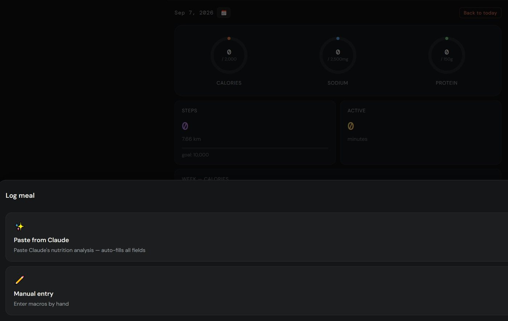
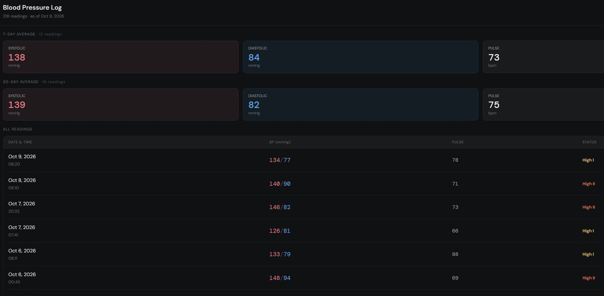

Division IV · Project Documentation
A personal health tracker for food, movement, sleep, weight and blood pressure. Meals are logged by pasting a nutrition breakdown from Claude, and the Fitbit data syncs itself overnight.
My health data was scattered across apps. Food lived in one, steps and sleep in the Fitbit app, blood pressure on scraps of paper. None of them showed the numbers I actually care about (sodium, systolic pressure) next to each other, and typing meals into a food database is tedious.
A mobile-first React PWA with six tabs, installed on my phone's home screen. Supabase handles login and storage. Fitbit data flows in through Google Health and a set of Supabase Edge Functions, so there is no server of my own to run.
One screen per question: what did I eat, how much did I move, how did I sleep, where is my weight and blood pressure going? Logging should take seconds, and there should be a clean table I can show a doctor.
The App
Every metric keeps the same colour everywhere it appears: calories orange, sodium blue, protein green, fat violet, carbs yellow, steps purple. That way a ring, a bar or a line reads the same on every tab. Numbers are set in DM Mono and labels in DM Sans, on a near-black background built for phone use at night. Tap any screenshot to enlarge it.
◎ Overview
Three progress rings track calories, sodium and protein against my personal targets. Below them are the day's steps and active minutes, a seven-day calorie bar chart with the target as a dashed line, and the logged meals with their kcal and sodium.
⬡ Nutrition
A macro donut splits the day into protein, fat and carbs. Sodium gets its own scale with three markers: optimal 1,500 mg, the 2,300 mg limit, and my personal target.
The full table lists 14 nutrients (calories, macros, saturated fat, sugar, added sugar, fibre, sodium, calcium, iron, potassium, vitamin C and D) against daily reference values. Each row gets a ✓, ! or – status.
◈ Move
Steps, distance and active minutes come from the Fitbit via Sync Fitbit. Workouts can be added by hand. The heart rate 24H card plots the last day at 3-minute resolution, and tapping any hour zooms in to 5-second detail.
◑ Sleep
A hand-built SVG timeline draws the night as a staircase of Awake, REM, Light and Deep blocks, in the style of Samsung Health. A week bar chart shows nights only, scaled to 10 hours.
◷ Weight
The tab shows current weight with a BMI computed from the height in my profile, plus 7-day and 30-day change cards. The trend chart offers 1W / 4W / All. It plots one point per day (the latest reading) and fits the Y axis to the selected range with 30% padding, rounded to 5 kg.
The full history loads with no cap and can be edited under History & Edit.
♡ Blood Pressure
The latest reading shows in systolic red / diastolic blue with its classification. The chart uses a fixed medical range of 60 to 220 mmHg. A line joins the first reading of each day, and any further readings that day appear as faint dots, so a re-measure doesn't make the line jump around.
Meal Logging
Instead of searching a food database, I describe the meal to a Claude Project, e.g. "overnight chia pudding 240g + 15g walnuts + 15g 85% dark chocolate". Its system prompt answers in a fixed, line-based format. Pasting that into VITALS fills every field. The parsing runs entirely in the browser with regular expressions, so the app itself makes no AI or API call.

Log meal sheet: paste or manual entryDescription: Chicken sandwich on sourdough Calories: 481 Protein: ~32g Fat: 18 Saturated fat: 4 Carbs: 42 Sugar: 5 Added sugar: 0 Fibre: 3 Sodium: 820mg Calcium: 120 Iron: 3.2 Potassium: 410 Vitamin C: 4 Vitamin D: 0.8
How the parser behaves
An early version only accepted : plus whitespace. Claude often writes ~4.4g, so every field except Calories silently came back empty, and 0 || '' wiped out real zeros as well. Both bugs are fixed, and the format is documented in PASTE_FORMAT.md.
Doctor View
Show at Doctor › on the BP tab opens a full-screen log built for a GP appointment. It shows 7-day and 30-day averages for systolic, diastolic and pulse, then every reading with date, time, pulse and a short status, and notes as an italic sub-row.

Doctor View: averages up top, every reading belowClassification (checked top-down)
| Status | Rule (mmHg) |
|---|---|
| Hypertensive crisis | sys > 180 or dia > 120 |
| High · Stage 2 | sys ≥ 140 or dia ≥ 90 |
| High · Stage 1 | sys ≥ 130 or dia ≥ 80 |
| Elevated | sys ≥ 120 and dia < 80 |
| Normal | below all of the above |
Why it exists
Home readings swing a lot. A single high reading tells a doctor little, but a month of morning and evening readings with averages tells them a lot.
A phone screen can't show that in five seconds, so the Doctor View drops the chart and uses big averages and a plain table, with the same colours as the rest of the app.
Architecture
The browser talks straight to Supabase through supabase-js, protected by row-level security. Fitbit data takes a separate path: watch → Fitbit app → Google Health → Supabase Edge Functions → Postgres. A nightly pg_cron job keeps that path flowing when the app stays closed.
┌───────────────────────────────────────┐ │ VITALS PWA (React 19 + Vite) │ │ GitHub Pages · /vitals/ · offline SW │ └──────┬────────────────────────┬───────┘ │ supabase-js │ fetch() "Sync Fitbit" │ (auth + RLS) ▼ │ ┌─────────────────────────────────┐ │ │ Supabase Edge Functions (Deno) │ │ │ sync-steps · sync-extras │ │ │ sync-sleep · sync-hr-intraday │ │ └──────┬───────────────▲──────────┘ │ │ upsert │ OAuth refresh token │ │ (service role)│ + Health API v4 ▼ ▼ │ ┌──────────────────────────┐ ┌─┴───────────────────┐ │ Supabase Postgres │ │ Google Health API │ │ meals · activity · sleep│ │ ▲ │ │ weight · blood_pressure │ │ Fitbit app │ │ heart_rate_intraday │ │ ▲ │ │ user_profile │ │ Inspire 3 (wrist) │ │ │ └─────────────────────┘ │ pg_cron 01:00 UTC ──────┼──▶ sync-extras (nightly) └──────────────────────────┘
Stack
| Layer | Tech |
|---|---|
| UI | React 19 · Vite 8 |
| Charts | Recharts + hand-rolled SVG |
| Styling | CSS variables · inline styles |
| Dates | dayjs |
| DB / Auth | Supabase Postgres · RLS |
| Sync | Edge Functions · pg_cron · pg_net |
| PWA | vite-plugin-pwa (autoUpdate) |
| Deploy | GitHub Actions → Pages |
Code layout
One hook per domain (useMeals, useSleep, useBloodPressure…) owns its Supabase queries and local state. Each exposes mutators that update optimistically and return { error }. The tabs only render what the hooks hand them.
An ErrorBoundary around the app catches render errors and shows a retry screen instead of a blank page.
Tables
| Table | Holds | Written by |
|---|---|---|
| meals | name, emoji, description, source (manual / claude), 14 nutrient columns | app |
| activity | one row per date: steps, km, active minutes, workout, resting HR, HRV, SpO₂ | sync + app |
| sleep | wake-up date, start/end, stage minutes, stage list (JSONB), is_nap | sync-sleep |
| heart_rate_intraday | 5-second buckets, 48h sliding window | sync-hr-intraday |
| weight | date, time, kg | app |
| blood_pressure | date, time, systolic, diastolic, pulse, notes | app |
| user_profile | height, calorie / sodium / protein / step targets (asked once at first launch) | onboarding |
Fitbit Sync
The Fitbit syncs to Google Health on the phone. The edge functions read it back server-side with a long-lived OAuth refresh token stored as a Supabase secret, so the app never shows a login popup and no Google credential reaches the browser. Every sync upserts, so running it twice is harmless.
| Function | Pulls | Notes |
|---|---|---|
| sync-steps | daily steps | dailyRollUp, last 30 days, upsert on date |
| sync-extras | distance, active minutes, resting HR, HRV, SpO₂ | writes beside the steps without overwriting them. Re-run nightly by pg_cron, because Google publishes resting HR a few days late |
| sync-sleep | sleep sessions + stages | plain GET list (no rollup for sleep); grouped by local wake-up date; upsert on (date, sleep_start) |
| sync-hr-intraday | raw heart rate (~3 s samples) | cursor-based; buckets to 5 s while streaming, inserts 2,000 rows per batch, prunes anything older than 48h |
Google Health API v4: the lessons that cost hours
Type names are kebab-case
active-minutes, heart-rate. steps and distance look the same in any casing, which hides the rule. Get it wrong and the error never mentions casing.
14-day rollup cap
Active minutes and heart rate reject or silently empty any window over 14 days. Resting HR came back as zero rows (with status "ok") until its window was capped too.
Sleep has no rollup
You fetch the whole list and filter by date afterwards. Sending a POST with a date range doesn't work either: the API treats it as create a data point and returns 403 on a read-only token.
Numbers arrive as strings
countSum: "8432", sleep minutes and UTC offsets like "3600s" all need parsing. Days with zero steps are missing from the response entirely.
One header, two failures
The app calls the functions without an auth header, so they have to be deployed with JWT verification off. A test call that includes the key passes anyway and hides the problem.
Naps were silently dropped
The first sync kept one session per day and threw the rest away. Google had stored every nap all along. Switching the unique key to (date, sleep_start) fixed it.
Data Quality
A cheap wrist tracker records a lot of noise. A throwaway probe-health function dumps the raw API response, and twice that changed what the app shows.
SpO₂: ~2,000 raw readings, three populations
Bar length relative to the largest group.
A quarter of all readings were exactly 50%, which is sensor dropout. Another ~130 were motion artefacts. The real cluster is accurate to only ±2–3%, which is too coarse to chart honestly, so SpO₂ is still synced and stored but no longer shown.
What else the probe turned up
Status
Shipped
Next & risks